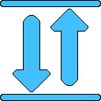

Bandwidth-Monitor
This extension allows you to monitor your network bandwidth by
measuring your download and upload speeds.
Features:
🗚 Download/Upload speed font size changer
🌐 Number of parallel connections (1-8) – lower this setting if you have lower download speeds for more accurate measurements
⌛ Downloader interval changer – allows you to set how often the extension will measure download (recommended to set higher number of seconds if you have lower download speeds)
External sites used:
https://proof.ovh.nethttps://speed.cloudflare.com